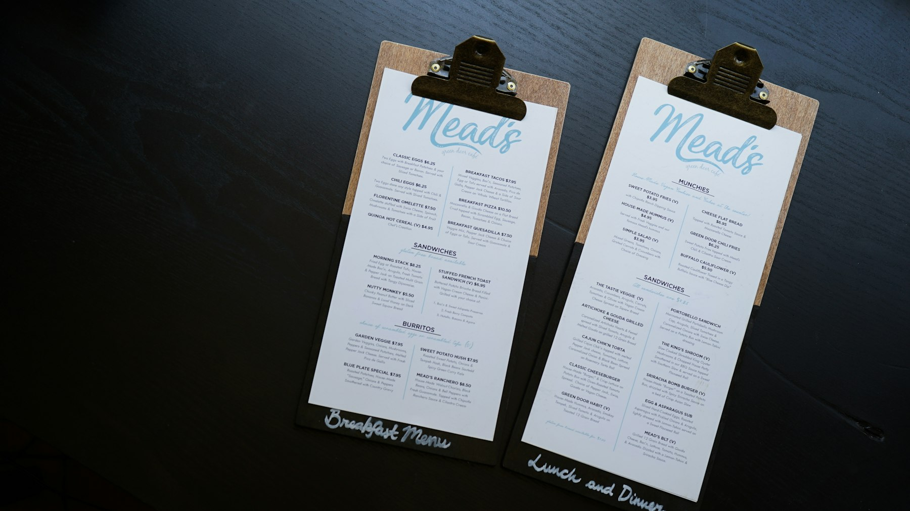

TL;DR
Freelancers must align client requirements with actionable tasks to enhance satisfaction.
Selecting the right project management tool and following a structured approach is crucial for success, especially when managing diverse client needs.
Defining Your Client's Needs
This workflow is for freelance consultants who face challenges in aligning client expectations with deliverables.
Freelance consultants, often juggling multiple clients, need clear guidance to meet diverse needs efficiently.
One common issue arises when clients have vague or evolving requirements, leading to frustration and downtime.
It's crucial to identify these gaps early, ensuring that everyone is on the same page.
By recognizing typical pain points—such as unclear timelines, conflicting priorities, or underdefined deliverables—consultants can preemptively address these challenges.
This stage sets the foundation for a smoother workflow by emphasizing open communication and clarifying objectives with clients.
The Pitfalls of Typical Project Management Advice
Freelancers often find that generic project management advice does not suit their unique context.
Standard methodologies might suggest broad frameworks that assume large teams yet overlook the agility that freelancers require.
For instance, using overly complex tools can create confusion, leading to misaligned priorities.
Additionally, many freelancers may encounter a mismatch between client needs and the prescribed tools, making it challenging to execute tasks efficiently.
When freelancers strive to apply standardized solutions rigidly, they can add unnecessary complexity to their workflow, ultimately hindering productivity.
Recognizing these pitfalls empowers consultants to refine their approach and tailor project management strategies that directly address client needs.
Mapping the Workflow: The Client Requirement Hierarchy
To effectively transform client requirements into actionable tasks, it’s essential to establish a clear workflow hierarchy.
Start by breaking down high-level goals into smaller, manageable components.
For example, if a client’s objective is to launch a marketing campaign, the hierarchy could decompose this into key tasks such as strategy development, content creation, and execution.
Each task should be critically assessed to ensure it is actionable and aligned with the client’s vision.
Visualizing this hierarchy helps maintain clarity and allows for easy tracking of progress.
Implementing this structured approach aids freelancers in consistently translating complex client requirements into well-defined tasks that are executed seamlessly.
Step-by-Step Setup of Your Project Management Tool
Setting up a project management tool thoughtfully can drastically improve task tracking and execution.
First, select a platform based on your unique needs—whether that’s Trello for visual organization or Asana for comprehensive task management.
Once chosen, begin the initial setup by creating project templates that reflect common client requests, enabling rapid deployment.
Integrate client requirements directly into this setup, ensuring that each task reflects what the client has communicated.
Regularly updating this setup with feedback from clients ensures your workflow remains adaptable and responsive.
This step-by-step configuration process allows freelancers to create a robust system to manage client-driven tasks effectively.
Choosing the Right Tools: Decision Guidelines
Selecting the right project management tools is not just about the software's features but understanding how it aligns with your operational needs.
Start by defining specific criteria: Does it facilitate communication?
Is it adaptable for your workflow?
Does it integrate well with other tools you use?
For instance, if you prioritize visual task management, tools like Trello might be ideal.
Conversely, if you're managing time-sensitive projects, consider software like ClickUp that provides advanced tracking options.
This decision-making process should also consider the cost-effectiveness of each tool.
By clearly understanding your unique circumstances and evaluating options through organized decision guidelines, freelancers can ensure they choose a platform suited to boost efficiency.
Avoiding Common Mistakes in Task Execution
Common mistakes can derail even the best-planned projects, especially in freelance settings.
A major misstep is neglecting to keep communication channels open with clients, which can lead to misunderstandings and unmet expectations.
Similarly, freelancers often underestimate the time required for tasks, resulting in over-promising deliverables and risking their reputation.
Acknowledging these pitfalls is key; incorporate regular check-ins with clients to gauge satisfaction and adjust timelines accordingly.
This vigilance in task execution fosters a more transparent relationship and mitigates the risk of errors that stem from assumptions and incomplete information.

Actionable Checklist for Effective Task Management
To help you implement this framework effectively, here’s a checklist tailored for freelancers:
1.
Define client objectives clearly.
2.
Map out a workflow hierarchy to visualize tasks.
3.
Set up your project management tool with relevant templates.
4.
Regularly communicate progress and expectations.
5.
Be proactive in assessing task timelines and adjust as necessary.
Additionally, be aware of scenarios when this framework may not be suitable, such as when project scopes are highly variable or when clients frequently change direction.
Recognizing these red flags can save you from wasted effort and provide clarity on when to pivot your approach.
FAQ
What project management tools are best suited for freelancers?
Tools like Trello, Asana, and ClickUp are popular among freelancers due to their adaptability and user-friendly interfaces.
How do I communicate client expectations to my team effectively?
Utilize project management tools to track all client communications and keep your team updated on client expectations and feedback.
What if my client changes requirements frequently?
Regularly check in with clients and incorporate flexible planning methods to adapt to changing needs.
Photo credits
- Photo 1: Van Tay Media on Unsplash (https://unsplash.com/@vantaymedia) (https://unsplash.com/photos/man-and-two-women-sitting-beside-brown-wooden-table-close-up-photography-Dx6lpoMAG-Y)
- Photo 2: LinkedIn Sales Solutions on Unsplash (https://unsplash.com/@linkedinsalesnavigator) (https://unsplash.com/photos/woman-in-red-long-sleeve-shirt-sitting-in-front-of-silver-macbook-hMLDD0Gyd4A)
- Photo 3: Hassaan Here on Unsplash (https://unsplash.com/@hassaanhre) (https://unsplash.com/photos/a-computer-generated-image-of-a-curved-surface-O8s_2_pEISg)
- Photo 4: Pakata Goh on Unsplash (https://unsplash.com/@pakata) (https://unsplash.com/photos/laptop-computer-beside-monitor-with-keyboard-and-mouse-EJMTKCZ00I0)
- Photo 5: Muhammad Raufan Yusup on Unsplash (https://unsplash.com/@muhraufan) (https://unsplash.com/photos/person-facing-laptop-inside-room-rYRE6ju-2K8)
- Photo 6: Vitaly Sacred on Unsplash (https://unsplash.com/@vitalysacred) (https://unsplash.com/photos/silver-laptop-displaying-man-sitting-on-stairs-RMBEjU99A1I)
- Photo 7: Catherine Heath on Unsplash (https://unsplash.com/@catherineheath) (https://unsplash.com/photos/two-meads-printed-paper-with-clips-HzliqcgPxnA)